时间复杂度分析
什么是时间复杂度
时间复杂度是一个函数，它定性描述该算法的运行时间。
什么是大O
算法导论给出的解释：大O用来表示上界的，当用它作为算法的最坏情况运行时间的上界，就是对任意数据输入的运行时间的上界。
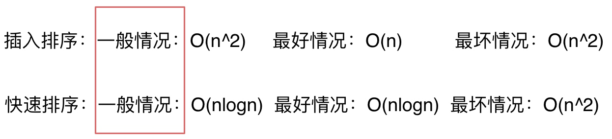
通常情况下，面试中说道算法的时间复杂度是多少指的都是一般情况。
但是如果面试官和我们深入探讨一个算法的实现以及性能的时候，就要时刻想着数据用例的不一样，时间复杂度也是不同的，这一点是一定要注意的。
不同数据规模的差异
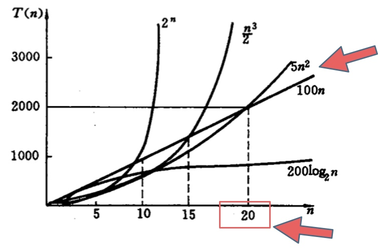
就像上图中 \(O(5n^2)\) 和 \(O(100n)\) 在n为20之前 很明显 \(O(5n^2)\)是更优的，所花费的时间也是最少的。
大O就是数据量级突破一个点且数据量级非常大的情况下所表现出的时间复杂度，这个数据量也就是常数项系数已经不起决定性作用的数据量。
所以我们说的时间复杂度都是省略常数项系数的，是因为一般情况下都是默认数据规模足够的大
\(O(1)\)常数阶 < \(O(\log n)\)对数阶 < \(O(n)\)线性阶 < \(O(n^2)\)平方阶 < \(O(n^3)\)立方阶 < \(O(2^n)\)指数阶
复杂表达式的化简
有时候我们去计算时间复杂度的时候发现不是一个简单的\(O(n)\) 或者\(O(n^2)\)， 而是一个复杂的表达式 \(O(2*n^2+10*n+1000)\)
这里需要用到简化法
- 去掉运行时间中的加法常数项 （因为常数项并不会因为n的增大而增加计算机的操作次数）\(O(2*n^2 + 10*n)\)
- 去掉常数系数 \(O(n^2 + n)\)
- 只保留保留最高项，去掉数量级小一级的n （因为n^2 的数据规模远大于n） \(O(n^2)\)
\(O(\log n)\)中的log是以什么为底？
平时说这个算法的时间复杂度是logn的，那么一定是log 以2为底n的对数么？
其实不然，也可以是以10为底n的对数，也可以是以20为底n的对数，但我们统一说 logn，也就是忽略底数的描述。
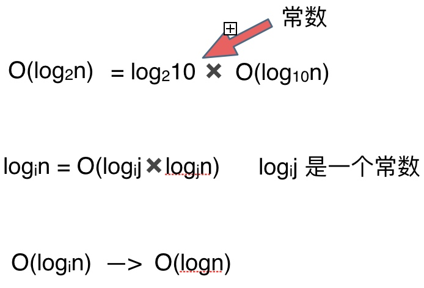
抽象一下就是在时间复杂度的计算过程中，log以i为底n的对数等于log 以j为底n的对数，所以忽略了i，直接说是logn。
递归算法时间复杂度
递归的时间复杂度 == 递归的次数 * 每次递归中的操作次数。
同一道题目，同样使用递归算法，有的同学会写出了\(O(n)\)的代码，有的同学就写出了\(O(\log n)\)的代码。
面试题：求x的n次方
暴力求解:
当前时间复杂度为\(O(n)\)
int func1(int x, int n) {
int result = 1; // 注意 任何数的0次方等于1
for (int i = 0; i < n; i++) {
result = result * x;
}
return result;
}
简单递归算法:
当前时间复杂度为\(O(n)\)
int func2(int x, int n) {
if (n == 0) {
return 1; // return 1 同样是因为0次方是等于1的
}
return function2(x, n - 1) * x;
}
每次n-1，递归了n次时间复杂度是\(O(n)\)，每次进行了一个乘法操作，乘法操作的时间复杂度一个常数项\(O(1)\)，所以这份代码的时间复杂度是 \(n × 1 = O(n)\)。
优化递归算法:
当前时间复杂度为\(O(n)\)
int func3(int x, int n) {
if (n == 0) {
return 1;
}
if (n % 2 == 1) {
return function3(x, n / 2) * function3(x, n / 2)*x;
}
return function3(x, n / 2) * function3(x, n / 2);
}
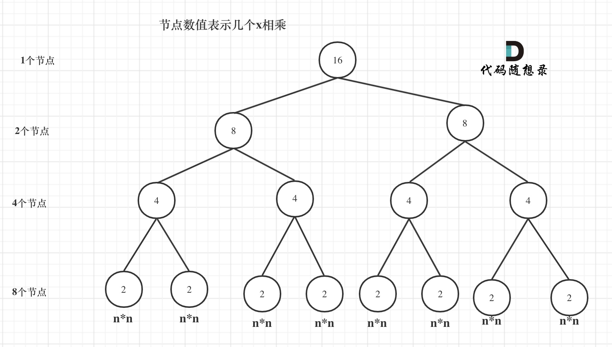
当前这棵二叉树就是求x的n次方，n为16的情况，n为16的时候，进行了多少次乘法运算呢？
这棵树上每一个节点就代表着一次递归并进行了一次相乘操作，所以进行了多少次递归的话，就是看这棵树上有多少个节点。
熟悉二叉树话应该知道如何求满二叉树节点数量，这棵满二叉树的节点数量就是2^3 + 2^2 + 2^1 + 2^0 = 15，可以发现：这其实是等比数列的求和公式，这个结论在二叉树相关的面试题里也经常出现。
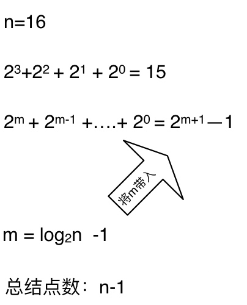
时间复杂度忽略掉常数项-1之后，这个递归算法的时间复杂度依然是\(O(n)\)。
最终递归算法:
int func4(int x, int n) {
if (n == 0) {
return 1;
}
int t = func4(x, n / 2);// 这里相对于func3，是把这个递归操作抽取出来
if (n % 2 == 1) {
return t * t * x;
}
return t * t;
}
可以看到这里仅仅有一个递归调用，且每次都是n/2 ，所以这里我们一共调用了log以2为底n的对数次。
每次递归了做都是一次乘法操作，这也是一个常数项的操作，那么这个递归算法的时间复杂度才是真正的\(O(\log n)\)。
空间复杂度
对一个算法在运行过程中占用内存空间大小的量度，记做\(S(n)=O(f(n)\)。
空间复杂度(Space Complexity) 记作\(S(n)\) 依然使用大O来表示。利用程序的空间复杂度，可以对程序运行中需要多少内存有个预先估计。
来看一个空间复杂度\(O(1)\)的例子：
int j = 0;
for (int i = 0; i < n; i++) {
j++;
}
第一段代码可以看出，随着n的变化，所需开辟的内存空间并不会随着n的变化而变化。即此算法空间复杂度为一个常量，所以表示为大\(O(1)\)。
来看一个空间复杂度\(O(n)\)的例子：
当消耗空间和输入参数n保持线性增长，这样的空间复杂度为\(O(n)\)
int* a = new int(n);
for (int i = 0; i < n; i++) {
a[i] = i;
}
我们定义了一个数组出来，这个数组占用的大小为n，虽然有一个for循环，但没有再分配新的空间，因此，这段代码的空间复杂度主要看第一行即可，随着n的增大，开辟的内存大小呈线性增长，即 \(O(n)\)。
递归求斐波那契数列的性能分析
int fibonacci(int i) {
if(i <= 0) return 0;
if(i == 1) return 1;
return fibonacci(i-1) + fibonacci(i-2);
}
对于递归算法来说，代码一般都比较简短，从算法逻辑上看，所用的存储空间也非常少，但运行时需要内存可不见得会少。
时间复杂度分析
在讲解递归时间复杂度的时候，我们提到了递归算法的时间复杂度本质上是要看: 递归的次数 * 每次递归的时间复杂度。
可以看出上面的代码每次递归都是\(O(1)\)的操作。再来看递归了多少次，这里将i为5作为输入的递归过程 抽象成一棵递归树，如图：
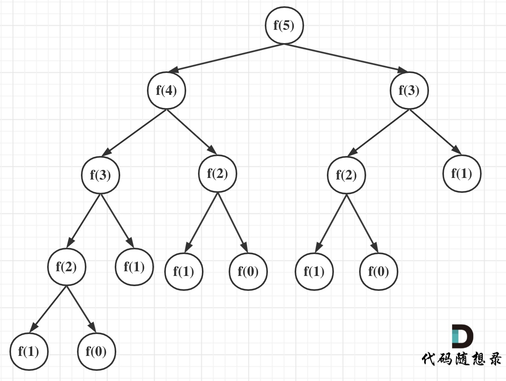
从图中，可以看出f(5)是由f(4)和f(3)相加而来，那么f(4)是由f(3)和f(2)相加而来，以此类推。
在这棵二叉树中每一个节点都是一次递归，那么这棵树有多少个节点呢？
我们之前也有说到，一棵深度（按根节点深度为1）为k的二叉树最多可以有 2^k - 1 个节点。
所以该递归算法的时间复杂度为\(O(2^n)\)，这个复杂度是非常大的，随着n的增大，耗时是指数上升的。
空间复杂度
说完了这段递归代码的时间复杂度，再看看如何求其空间复杂度呢，这里给大家提供一个公式：递归算法的空间复杂度 = 每次递归的空间复杂度 * 递归深度
每次递归所需的空间都被压到调用栈里（这是内存管理里面的数据结构，和算法里的栈原理是一样的），一次递归结束，这个栈就是就是把本次递归的数据弹出去。所以这个栈最大的长度就是递归的深度。
此时可以分析这段递归的空间复杂度，从代码中可以看出每次递归所需要的空间大小都是一样的，所以每次递归中需要的空间是一个常量，并不会随着n的变化而变化，每次递归的空间复杂度就是\(O(1)\)。
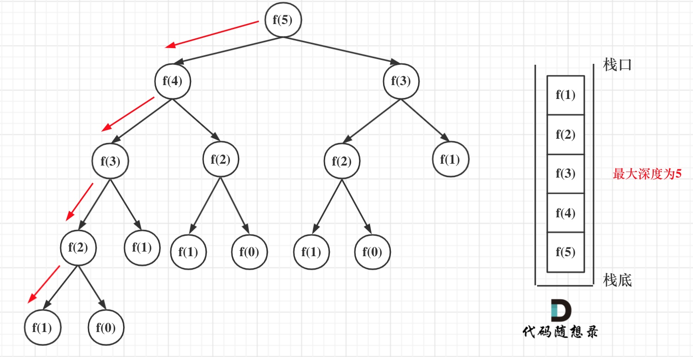
递归第n个斐波那契数的话，递归调用栈的深度就是n。
那么每次递归的空间复杂度是\(O(1)\)， 调用栈深度为n，所以这段递归代码的空间复杂度就是\(O(n)\)。
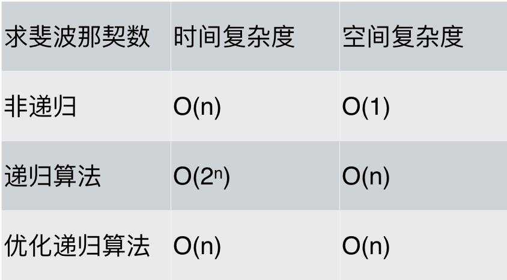
可以看出，求斐波那契数的时候，使用递归算法并不一定是在性能上是最优的，但递归确实简化的代码层面的复杂度。
二分法（递归实现）的性能分析
int binary_search( int arr[], int l, int r, int x) {
if (r >= l) {
int mid = l + (r - l) / 2;
if (arr[mid] == x)
return mid;
if (arr[mid] > x)
return binary_search(arr, l, mid - 1, x);
return binary_search(arr, mid + 1, r, x);
}
return -1;
}
都知道二分查找的时间复杂度是\(O(\log n)\)，那么递归二分查找的空间复杂度是多少呢？
我们依然看 每次递归的空间复杂度和递归的深度
每次递归的空间复杂度可以看出主要就是参数里传入的这个arr数组，但需要注意的是在C/C++中函数传递数组参数，不是整个数组拷贝一份传入函数而是传入的数组首元素地址。
也就是说每一层递归都是公用一块数组地址空间的，所以 每次递归的空间复杂度是常数即：\(O(1)\)。
再来看递归的深度，二分查找的递归深度是logn ，递归深度就是调用栈的长度，那么这段代码的空间复杂度为 \(1 * logn = O(logn)\)。
大家要注意自己所用的语言在传递函数参数的时，是拷贝整个数值还是拷贝地址，如果是拷贝整个数值那么该二分法的空间复杂度就是\(O(n\log n)\)。
代码的内存消耗
C++内存管理
如果我们写C++的程序，就要知道栈和堆的概念，程序运行时所需的内存空间分为 固定部分，和可变部分，如下：
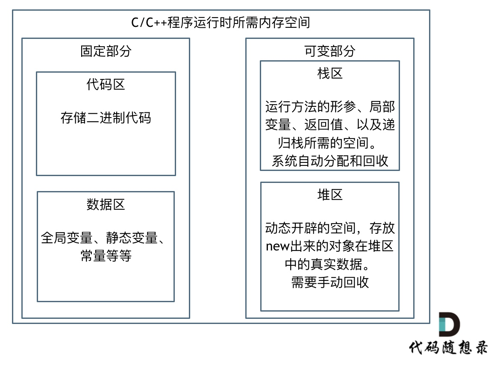
固定部分的内存消耗 是不会随着代码运行产生变化的， 可变部分则是会产生变化的
更具体一些，一个由C/C++编译的程序占用的内存分为以下几个部分：
- 栈区(Stack) ：由编译器自动分配释放，存放函数的参数值，局部变量的值等，其操作方式类似于数据结构中的栈。
- 堆区(Heap) ：一般由程序员分配释放，若程序员不释放，程序结束时可能由OS收回
- 未初始化数据区(Uninitialized Data)： 存放未初始化的全局变量和静态变量
- 初始化数据区(Initialized Data)：存放已经初始化的全局变量和静态变量
- 程序代码区(Text)：存放函数体的二进制代码
在可变部分中，栈区间的数据在代码块执行结束之后，系统会自动回收，而堆区间数据是需要程序员自己回收，所以也就是造成内存泄漏的发源地。
如何计算程序占用多大内存
想要算出自己程序会占用多少内存就一定要了解自己定义的数据类型的大小
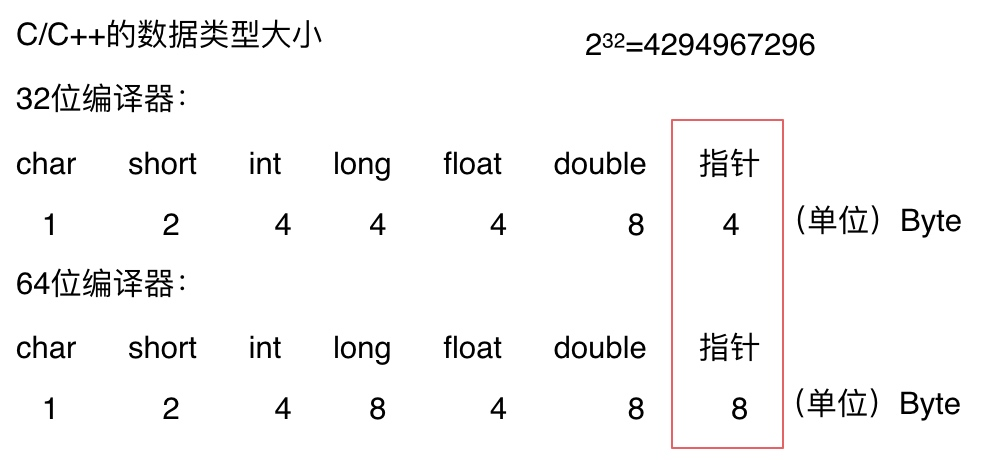
注意图中有两个不一样的地方，为什么64位的指针就占用了8个字节，而32位的指针占用4个字节呢？
1个字节占8个比特，那么4个字节就是32个比特，可存放数据的大小为2^32，也就是4G空间的大小，即：可以寻找4G空间大小的内存地址。
大家现在使用的计算机一般都是64位了，所以编译器也都是64位的。
安装64位的操作系统的计算机内存都已经超过了4G，也就是指针大小如果还是4个字节的话，就已经不能寻址全部的内存地址，所以64位编译器使用8个字节的指针才能寻找所有的内存地址。
注意2^64是一个非常巨大的数，对于寻找地址来说已经足够用了。
内存对齐
不要以为只有C/C++才会有内存对齐，只要可以跨平台的编程语言都需要做内存对齐，Java、Python都是一样的。
而且这是面试中面试官非常喜欢问到的问题，就是：为什么会有内存对齐？
主要是两个原因
-
平台原因：不是所有的硬件平台都能访问任意内存地址上的任意数据，某些硬件平台只能在某些地址处取某些特定类型的数据，否则抛出硬件异常。为了同一个程序可以在多平台运行，需要内存对齐。
-
硬件原因：经过内存对齐后，CPU访问内存的速度大大提升。
struct node{
int num;
char cha;
}st;
int main() {
int a[100];
char b[100];
cout << sizeof(int) << endl;
cout << sizeof(char) << endl;
cout << sizeof(a) << endl;
cout << sizeof(b) << endl;
cout << sizeof(st) << endl;
}
这段代码的数据类型大小是如下
4
1
400
100
8
此时会发现，和单纯计算字节数的话是有一些误差的。
这就是因为内存对齐的原因。
来看一下内存对齐和非内存对齐产生的效果区别。
CPU读取内存不是一次读取单个字节，而是一块一块的来读取内存，块的大小可以是2，4，8，16个字节，具体取多少个字节取决于硬件。
假设CPU把内存划分为4字节大小的块，要读取一个4字节大小的int型数据，来看一下这两种情况下CPU的工作量：
第一种就是内存对齐的情况，如图：
一字节的char占用了四个字节，空了三个字节的内存地址，int数据从地址4开始。
此时，直接将地址4，5，6，7处的四个字节数据读取到即可。
第二种是没有内存对齐的情况如图：
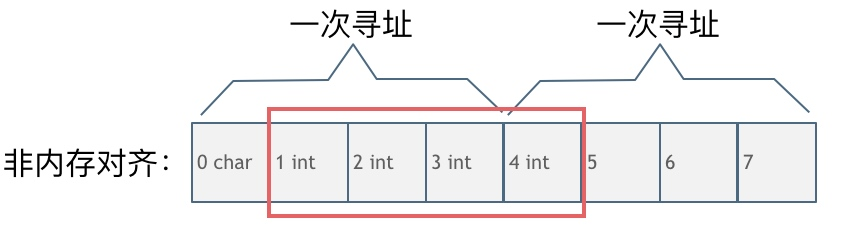
char型的数据和int型的数据挨在一起，该int数据从地址1开始，那么CPU想要读这个数据的话来看看需要几步操作：
因为CPU是四个字节四个字节来寻址，首先CPU读取0，1，2，3处的四个字节数据
CPU读取4，5，6，7处的四个字节数据
合并地址1，2，3，4处四个字节的数据才是本次操作需要的int数据
此时一共需要两次寻址，一次合并的操作。
大家可能会发现内存对齐岂不是浪费的内存资源么？
是这样的，但事实上，相对来说计算机内存资源一般都是充足的，我们更希望的是提高运行速度。
编译器一般都会做内存对齐的优化操作，也就是说当考虑程序真正占用的内存大小的时候，也需要认识到内存对齐的影响。